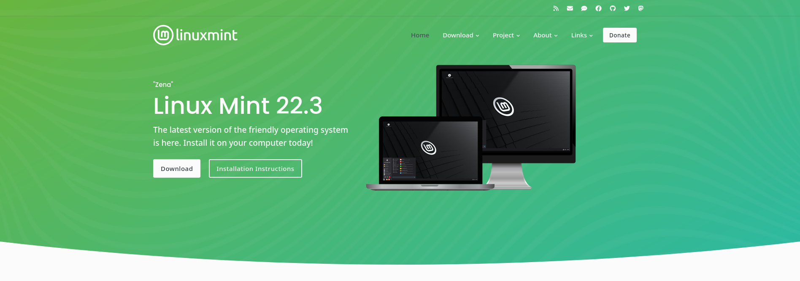
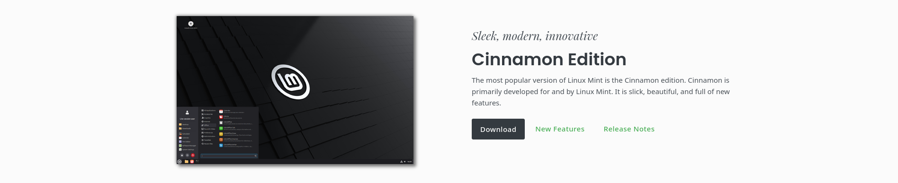
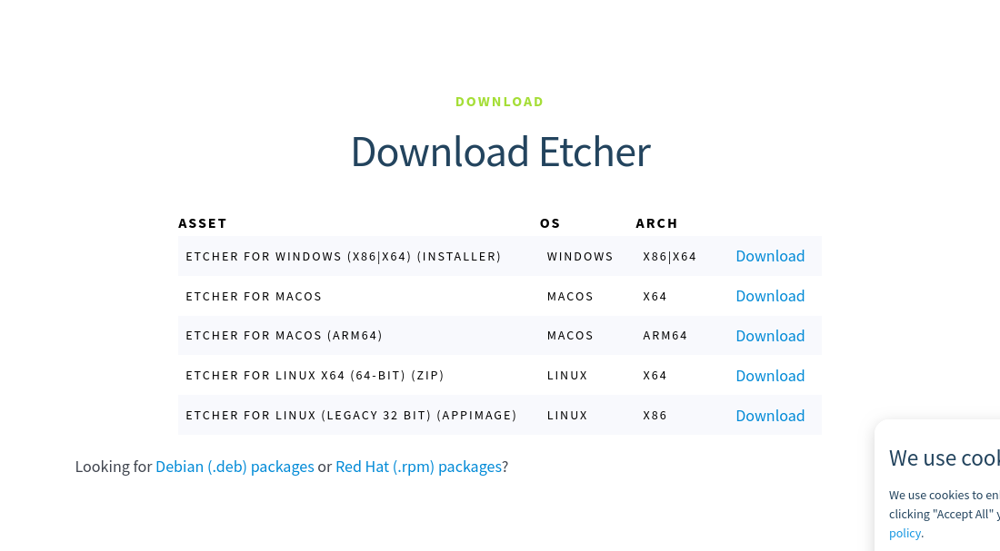
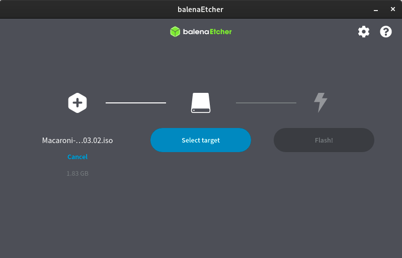

Now for the hardest part (but still pretty easy if you are patient): actually getting a system up and running. You will need a few things for this part, so get up and get them before you start.
The ISO file is what we are going to be booting the target computer on to get into the Mint live environment and install Linux. First, go to https://www.linuxmint.com/ and click on the "Download" button.  You are going to want to choose the top option, the Cinnamon Edition.  Then, scroll down and pick one of the download mirrors. Any one of them is fine. Then, wait a few minutes for the file to download. While you are waiting, go to https://etcher.balena.io/ to download the tool that we will use to flash the USB drive to make it bootable. Just download the version for your system. 
I use something called Ventoy to boot multiple ISO files on a single USB stick, and I find it very convenient. If this sounds like something you would find useful, take a look at the docs here: https://www.ventoy.net/en/index.html
Now once you have both your flashing tool and the ISO downloaded, you can flash your USB stick. Note that this will erase everything on it, so don't blame me for any data loss. You have been warned.

Now all you have to do is insert your USB, open up Etcher, select the ISO file, select your USB drive, and flash it! It should just take a few minutes. Once it is done, we are ready to move on to the next step: booting into the live environment.
Once your ISO is flashed, make sure that the target computer is shut down, then take a look at the manual or online documentation (or Reddit, Reddit works too) to find what key you have to spam to get into the BIOS. This part varies for every system, so just look up "how to enter bios on [x device]" and "how to select boot device on [x device]". This part isn't hard, but I can't give instructions for every system ever, because that would be stupid.
Now assuming that you have figured out how to boot off of the USB, you should see the Linux Mint boot screen and enter the live environment!
Now that you are in the live environment, there should be an "Install Linux Mint" disc icon on the desktop that you can double-click to start the installation process. If you want to test out the OS, you can do so now without installing everything, but note that everything will reset once you restart your computer.
The installation process will begin with things like your country, keyboard layout, and language. It will then ask to install multimedia codecs. It asks for this because some of these are closed-source, and some people swear by having 100% open-source systems. If you are one of these people, don't check this box, but if you want most video files to be supported, you are probably going to want to download them.

It will then ask you for the installation type. If you want to wipe your drive and get rid of all other operating systems on the partition, select "Erase disk and install Linux Mint". If you want something else, select that option. Again, I am not responsible for any data loss. Then, you will be asked for a username, password, and computer name. I usually set my username to "user", but it really does not matter what you choose, same for the computer's name. Set up your password, click continue, and Mint will install!
Assuming that nothing went wrong (if it did, you can yell at me at thatbakedbeans@proton.me or thatbakedbeans on Discord. You can still yell at me if it did work, I would love to hear), you should have a fully functional Linux Mint system! Now you are ready to move on to part 3 and learn how to use your package manager and some simple programs.
But first, open Firefox. Go to the settings menu (hamburger menu > settings). Go to the home tab on the left and uncheck everything under "Firefox Home Content", including sponsored shortcuts and sponsored stories. Go to the search tab on the left and change Google to DuckDuckGo. Scroll down a bit and uncheck "Suggestions from sponsors". Now go to https://addons.mozilla.org/en-US/firefox/addon/ublock-origin/ and hit "Add to Firefox". Great, now Firefox is usable :3